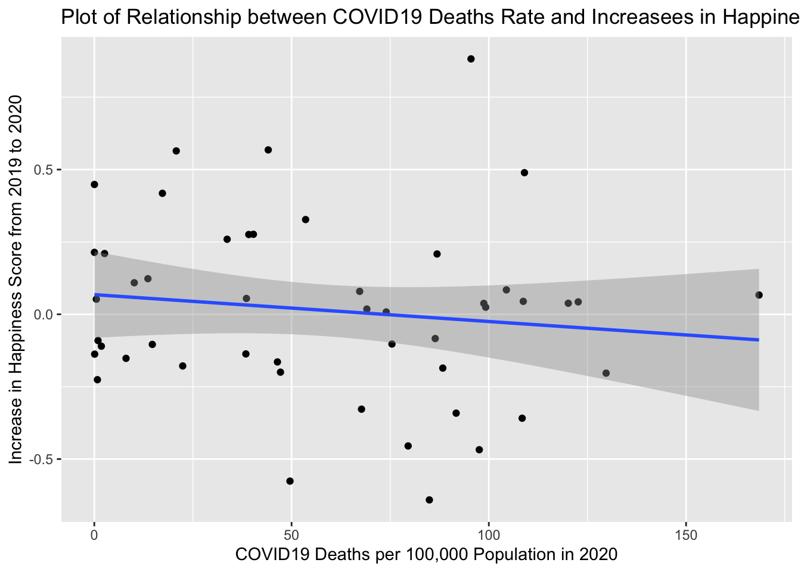

COVID19 Distributions
covid_death_rate = covid_happy_trend %>%
plot_ly(x = ~country_name,
y = ~covid_19_deaths_per_100_000_population_in_2020,
type = "bar", color = ~country_continent) %>%
layout(
title = "COVID19 Deaths per 100,000 Population in 2020 in Each Country",
xaxis = list(title = 'Country Name'),
yaxis = list(title = 'COVID19 Deaths per 100,000 Population'))
covid_death_rate
covid_happy_trend %>%
group_by(country_continent) %>%
<<<<<<< HEAD
summarize(n = n()) %>%
knitr::kable(col.names = c("Continent", "Number of Countries in both Happiness and COVID Dataset"))
| Africa |
1 |
| Americas |
6 |
| Asia |
10 |
| Europe |
30 |
| Oceania |
1 |
Change in Happiness Score Related to COVID19
=======
summarise(n = n())
## # A tibble: 6 x 2
## country_continent n
## <chr> <int>
## 1 Africa 1
## 2 Americas 9
## 3 Asia 16
## 4 Europe 33
## 5 Oceania 1
## 6 <NA> 3
>>>>>>> 2a850f6f9b539c95f0f865f30c478e12bdf1881d
covid_happy_trend %>%
ggplot(aes(x = covid_19_deaths_per_100_000_population_in_2020,
y = happy_change_2020)) +
geom_point() +
geom_smooth(method = "lm") +
ggtitle("Plot of Relationship between COVID19 Deaths Rate and Increasees in Happiness Scores with Linear Regression Model") +
xlab("COVID19 Deaths per 100,000 Population in 2020") +
ylab("Increase in Happiness Score from 2019 to 2020")
## `geom_smooth()` using formula 'y ~ x'

covid_happy_trend_fc =
covid_happy_trend %>%
mutate(country_continent = factor(country_continent))
model = lm(happy_change_2020 ~ covid_19_deaths_per_100_000_population_in_2020, data = covid_happy_trend_fc)
summary(model)
##
## Call:
## lm(formula = happy_change_2020 ~ covid_19_deaths_per_100_000_population_in_2020,
## data = covid_happy_trend_fc)
##
## Residuals:
## Min 1Q Median 3Q Max
## -0.63023 -0.19340 0.01847 0.14833 0.90294
##
## Coefficients:
## Estimate Std. Error t value
## (Intercept) 0.0679156 0.0741398 0.916
## covid_19_deaths_per_100_000_population_in_2020 -0.0009279 0.0010276 -0.903
## Pr(>|t|)
## (Intercept) 0.364
## covid_19_deaths_per_100_000_population_in_2020 0.371
##
## Residual standard error: 0.3066 on 46 degrees of freedom
## Multiple R-squared: 0.01742, Adjusted R-squared: -0.003944
## F-statistic: 0.8153 on 1 and 46 DF, p-value: 0.3712
We expected that COVID19 will decrease the happiness score. However, even though the regression has a negative slope, there is no significant relationship between covid-related death and happiness score. This may result from the lack of data. In our happiness dataframe, there are 166 countries. However, there are only 60 countries have both COVID data and happiness score. This mean only 36% of the total countries we are interested in have COVID data. Among the countries have data related to COVID, 33 countries are from Europe, which covers 55% of the dataframe. In details we have 33 out of 151 European countries (21.85%), 16 out of 150 Asian countries (10.67%), 9 out of 77 American countries (11.69%), 1 out of 138 African countries (0.72%) and 1 from 9 Oceanian countries (11.11%). Number of European countries is un-proportionally high compared to the country numbers in other continent. On the other hand, the number of African countries is the lowest. The disproportion could bring more developed countries than developing countries to our dataset because Europe is concentrated with developed countries while Africa is concentrated with developing countries. Therefore, the dataset we have may significant biased because developed countries may be more stable to epidemic impact. So the data we have right now cannot give accurate relationship result.
model = lm(happy_change_2020 ~ covid_19_deaths_per_100_000_population_in_2020 + country_continent, data = covid_happy_trend_fc)
summary(model)
##
## Call:
## lm(formula = happy_change_2020 ~ covid_19_deaths_per_100_000_population_in_2020 +
## country_continent, data = covid_happy_trend_fc)
##
## Residuals:
## Min 1Q Median 3Q Max
## -0.63111 -0.21188 -0.00395 0.13530 0.83869
##
## Coefficients:
## Estimate Std. Error t value
## (Intercept) -0.2256695 0.2987959 -0.755
## covid_19_deaths_per_100_000_population_in_2020 -0.0002485 0.0013796 -0.180
## country_continentAmericas -0.0204513 0.3458256 -0.059
## country_continentAsia 0.3260302 0.3135975 1.040
## country_continentEurope 0.2929524 0.3189358 0.919
## country_continentOceania 0.2780058 0.4225585 0.658
## Pr(>|t|)
## (Intercept) 0.454
## covid_19_deaths_per_100_000_population_in_2020 0.858
## country_continentAmericas 0.953
## country_continentAsia 0.304
## country_continentEurope 0.364
## country_continentOceania 0.514
##
## Residual standard error: 0.2988 on 42 degrees of freedom
## Multiple R-squared: 0.1477, Adjusted R-squared: 0.04627
## F-statistic: 1.456 on 5 and 42 DF, p-value: 0.2246
After adding the continent variables, there is still no significant relationship. However, from the limit information, we can see that Americas are more likely to be effected by COVID19 because of the negatively relationship.